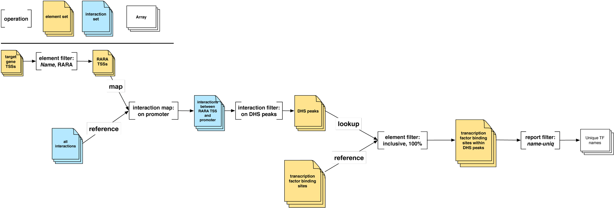

Target gene-to-TFBS¶
This figure describes a complete operational pipeline to retrieve the binding sites and names of transcription factors which lie within DHS peaks, which are associated with interactions whose promoters overlap RARA transcription start sites:
{kind=link}
Reading from left to right, we start with the Element Set of target gene transcription start sites (TSSs). We filter these on the name RARA to retrieve an element set of RARA -specific TSSs.
Next, we map this element set against the promoter elements of our Interaction Set of all interactions. This gives us all the RARA -specific interactions, which we filter to retrieve an element set of DHS peaks.
Subsequently, we apply an inclusive element set operation against this set of DHS peaks and an element set of transcription factor binding sites. We apply overlap criteria of 100% to ensure that the transcription factor binding site lies entirely within the DHS peak.
Finally, we have an element set of transcription factor binding sites that lie within DHS peaks. We apply a report filter on the Name attribute, to retrieve a final result: an ordered list of unique transcription factor names.